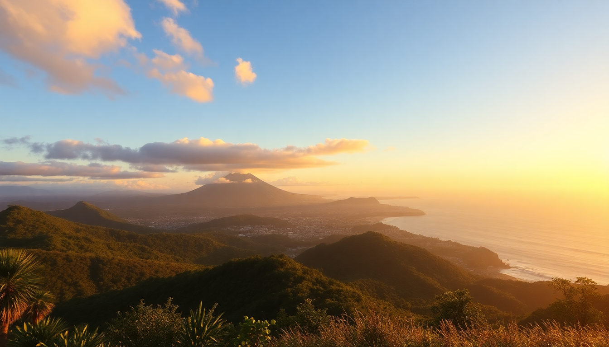

Best Time to Visit Costa Rica: Month-by-Month Guide

I’ve been to Costa Rica three times now, and each trip taught me something new about timing. The “best” month to visit really depends on whether you want dry beaches, active volcanoes without clouds, or cheaper lodges during the green season. Here’s what I learned from booking it wrong the first time and getting it right later.
When is the dry season vs. the rainy season?
Costa Rica has two main seasons: the dry season (mid-November through April) and the rainy season (May through mid-November). But “rainy” doesn’t mean constant downpours. In most places, it rains hard for an hour or two in the afternoon, then clears up. The Pacific coast (Manuel Antonio, Tamarindo) dries out faster than the Caribbean side.
- Dry season (Dec–Apr): Packed with tourists, higher hotel rates, and guaranteed sun on the Pacific beaches. We booked a room at Hotel Casa Turire near Turrialba in January and had zero rain for six days.
- Green season (May–Nov): Lush landscapes, lower prices, and fewer crowds. We stayed at Arenal Observatory Lodge in October and watched the volcano clear after a short morning shower — the trails were empty.
- Shoulder months (Nov, May): Best compromise. November is still damp but drying out; May sees the first heavy rains but everything is green and cheap.
What is the best month for wildlife in Costa Rica?
If wildlife is your priority, skip the peak dry season. Animals are harder to spot when foliage is sparse and water sources dry up. The rainy season brings out more activity because food and water are abundant.
- Turtle nesting (July–October): We saw olive ridley turtles at Ostional National Park in August. It’s a chaotic, muddy experience, but worth it.
- Howler monkeys and sloths: Active year-round, but easier to spot in the early rainy season (May–June) when trees are fruiting. We saw three sloths in one morning at Manuel Antonio National Park in June.
- Whale watching (July–October): Humpbacks arrive off the southern Pacific coast. A boat tour from Drake Bay in September gave us a close encounter.
- Birding (any month, but best Dec–Apr): The dry season concentrates birds around remaining water sources. We got great views of resplendent quetzals at Monteverde Cloud Forest Reserve in February.
How does the weather vary by region each month?
Costa Rica’s microclimates mean you can’t trust a single forecast. The Central Valley (San José) is mild year-round. The northern lowlands (Arenal) are hot and humid. The Pacific coast (Tamarindo, Manuel Antonio) has a pronounced dry/wet cycle. The Caribbean coast (Puerto Viejo) is wetter overall.
- San José (year-round 65–80°F): We spent a layover in Barrio Escalante in March — it was sunny and pleasant. November can be drizzly but never cold.
- Arenal (hot and humid): Best months are January–April. We hiked the Arenal 1968 Trail in February and had clear views of the volcano. In October, the clouds rolled in by 10 a.m.
- Monteverde (cool and windy): The cloud forest is always damp, but February–April give you the clearest mornings. We stayed at Hotel Belmar in March and saw the Gulf of Nicoya from our room.
- Manuel Antonio (Pacific coast): Dry from December–April. We swam at Espadilla Beach in January with no rain. August was sticky but the park was half empty.
- Tamarindo (Pacific coast): Same dry/wet pattern. We surfed at Playa Langosta in March — consistent waves and no crowds. September is rainy but the surf breaks are empty.
What are the crowds and costs like month by month?
High season runs from mid-December through April, plus the weeks around Easter and Christmas. Low season is May through November (excluding July, which is a local school break). The difference in price is stark.
- December–April: Expect 50–100% higher hotel rates. We paid $220/night at Hotel Arenal Manoa in March; the same room was $120 in September.
- May–June and September–October: Best value. We rented a car through Vamos Rent-A-Car in June for half the peak price.
- July–August: Crowded with families from North America and local tourists. Book everything three months ahead.
- November: A sweet spot. We found last-minute availability at Tango Mar Beach Resort in Tamarindo for 30% off peak rates.
Which months are best for specific activities?
Your ideal month depends on what you want to do. Surfing, hiking, and whitewater rafting all have different sweet spots.
- Surfing (Tamarindo, Santa Teresa): Best waves from November–April. We took lessons at Witch’s Rock Surf Camp in January and had consistent 4-foot swells.
- Whitewater rafting (Pacuare River): The river runs fastest from June–November. We rafted with Exploradores Outdoors in August — class III–IV rapids all day.
- Hiking (Arenal, Monteverde): Dry trails from January–April. We did the Cerro Chato hike in February and the mud was manageable. In October, we slipped constantly.
- Snorkeling (Cahuita, Isla del Caño): Visibility is best from December–April. We snorkeled at Cahuita National Park in March and saw sea turtles in clear water.
FAQ
What is the absolute worst month to visit Costa Rica? October is the rainiest month on the Pacific coast. We spent a week in Tamarindo in October and had two full days of rain. Roads to Monteverde can get muddy and slow. If you’re flexible, avoid October unless you’re heading to the Caribbean side, which stays drier.
Can I visit Costa Rica during the rainy season? Absolutely. We did a two-week trip in September and loved it. The rain usually comes in the afternoon, so we planned morning hikes and afternoon reading at the lodge. Hotels were half empty, and the rainforest was at its greenest. Just pack a good rain jacket and waterproof shoes.
Is it worth visiting Costa Rica in December? Yes, but expect crowds. The first two weeks of December are still shoulder season — we got decent rates at Hotel Grano de Oro in San José. After December 15, everything spikes. Book flights and lodging by August if you want to go for Christmas or New Year’s.
Conclusion
- For guaranteed sun on the beaches, go January–April and stick to the Pacific coast (Tamarindo, Manuel Antonio).
- For wildlife and lower costs, visit May–June or September–October — just plan for afternoon rain.
- For a balanced trip with fewer crowds, aim for November or the first half of December.
- For surfing, target November–April on the Pacific; for whitewater rafting, the rainy season (June–November) is best.
- Avoid October on the Pacific side unless you’re okay with heavy rain and muddy roads.